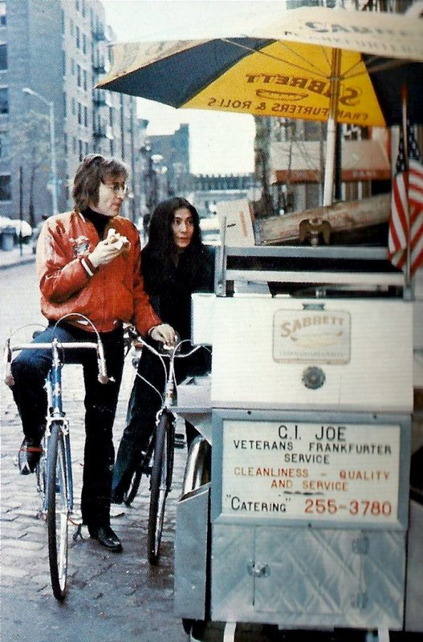
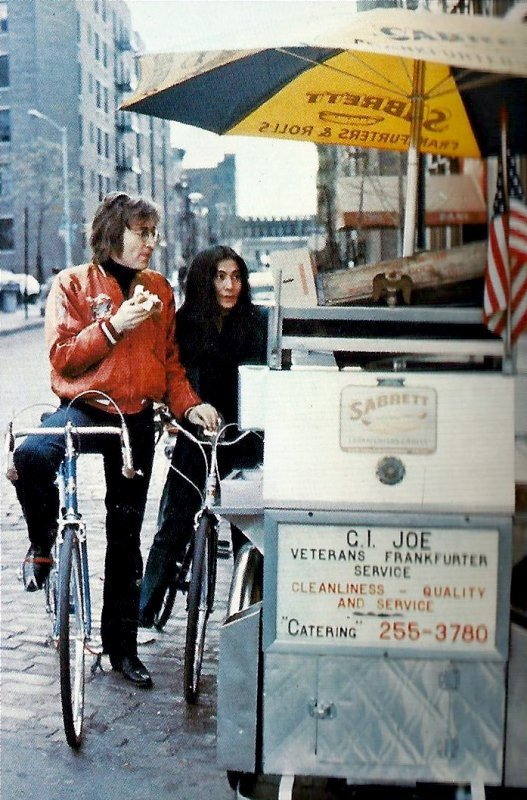
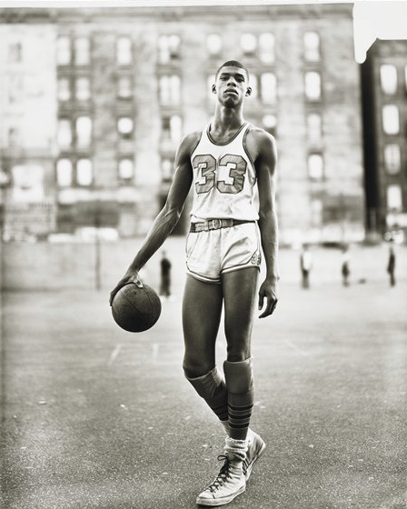
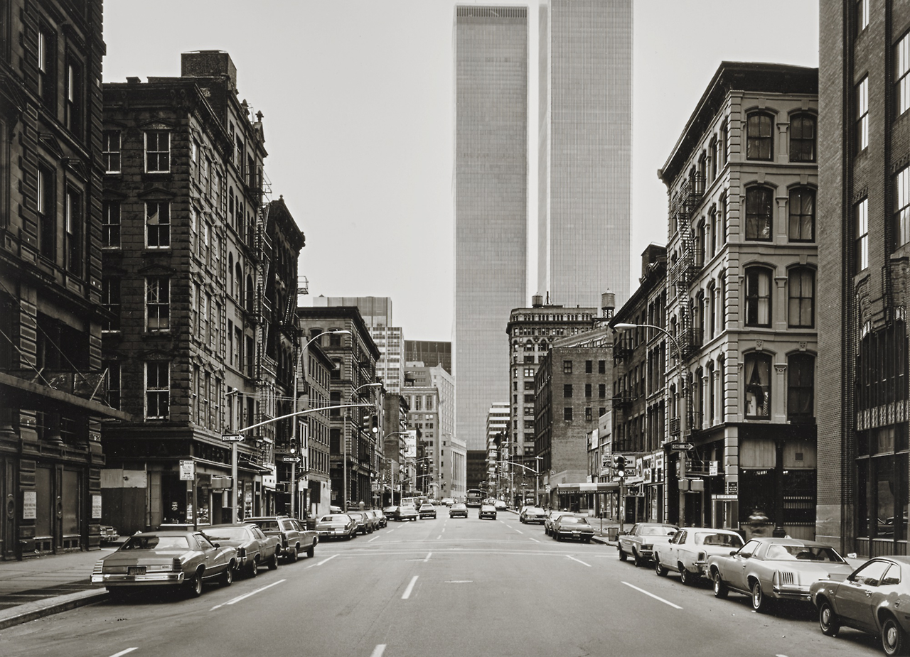
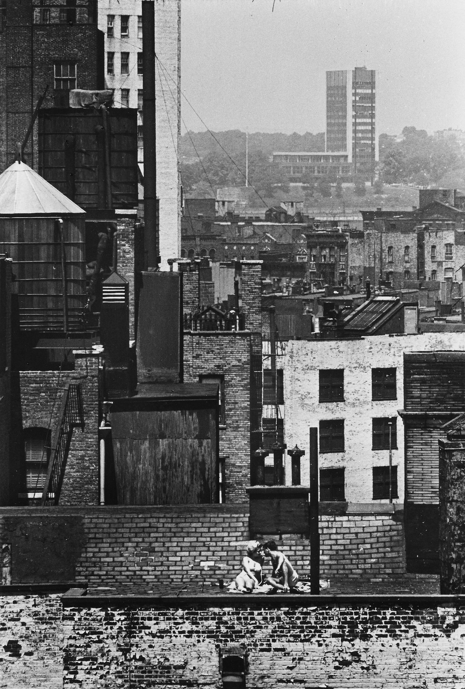
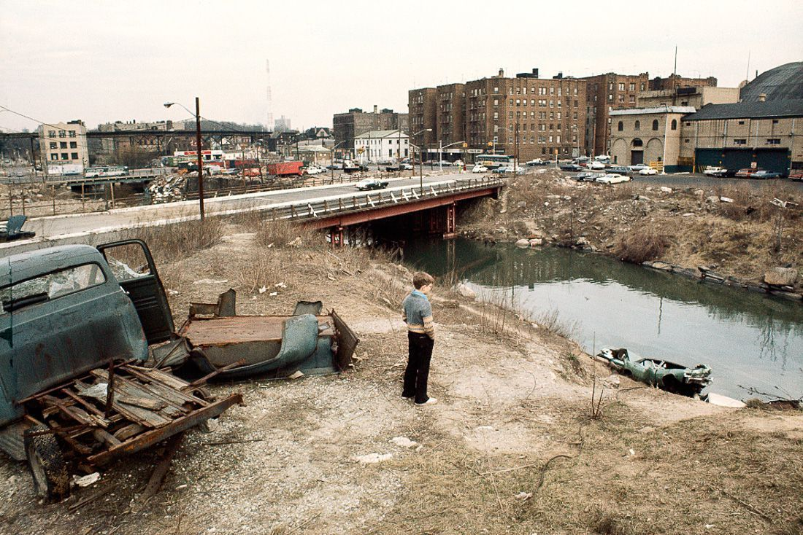

John & Yoko pedaling around Greenwich Village, 1972, by Ben Ross.

John & Yoko pedaling around Greenwich Village, 1972, by Ben Ross.

Richard Avedon Lew Alcindor (Later Kareem Abdul-Jabbar), 61st St and Amsterdam Avenue, New York City 1963

West Broadway, New York, Tribeca, 1978. Ferrotype

André Kertész, Number 35A (Watching from Above), NYC, June 6th, 1965.
“Tar Beach” was a favorite for so many people back then.

Times Square in the 70s
8th Ave around 46th Street

42nd Street near 6th Ave, 1979

Bronx, 1970

207th Street yard

Times Square, 1969